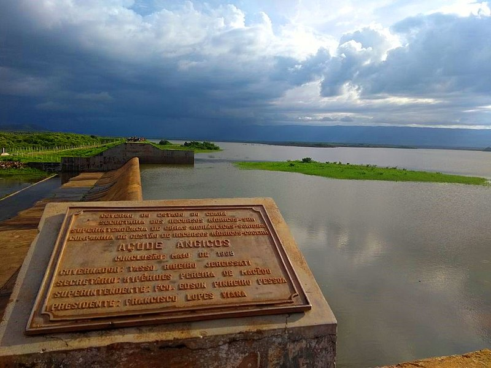

Informações técnicas sobre relevo, população, IDH etc.
| INFORMAÇÕES | |
|---|---|
| Municípios limítrofes | Coreaú, Ubajara e Tianguá |
| Fundação | 25 de março de 1955 (66 anos) |
| Área total | 181,240 km² |
| Clima | Tropical Semiárido brando |
| IDH | 0,605 — médio |
| PIB | R$ 3 416,44 |
| INFORMAÇÕES TERRITORIAIS | |
|---|---|
| Número de habitantes | 14 072 habitantes |
| Superfície de Frecheirinha |
18 124 hectares
314,93 km² (69,98 sq mi) |
| Densidade populacional | 77,6 ha./km² |
| Altitude de Frecheirinha | 123 metros de altitude |
| Coordenadas geográficas decimais |
Latitude:
-3.76045
Longitude: -40.816 |
| Coordenadas geográficas sexagesimais | Latitude: 3° 45' 38'' Sul , Longitude: 40° 48' 58'' Oeste |
| INFORMAÇÕES DO MUNICÍPIO | |
|---|---|
| Endereço da Prefeitura Municipal de Frecheirinha |
Frecheirinha
Prefeitura de Frecheirinha
Rua Joaquim Pereira, 855 FRECHEIRINHA - CE, 62340-000 Brasil Work +55 88 3655-1200 Fax +55 88 3655-1288 |
| Telefone da prefeitura |
(88) 3655-1200
Internacional: +55 88 3655-1200 |
| Fax |
(88) 3655-1288
Internacional: +55 88 3655-1288 |
| Endereço eletrônico da prefeitura |
Não disponível
|
| Site oficial do município | frecheirinha.ce.gov.br |
| INFORMAÇÕES DO ADMINISTRATIVAS | ||
|---|---|---|
| Prefeito de Frecheirinha | HELTON LUIS AGUIAR JUNIOR | |
| Partido politico | PDT | |
| INFORMAÇÕES DE TRANSPORTE | |
|---|---|
| Transporte urbano disponível | - |
| Aeroporto |
Aeroporto Prefeito Dr.João Silva Filho
Aeroporto de Sobral
53.8 km
Aeroporto Pinto Martins
94.5 km
|
| INFORMAÇÕES DE DISTÂNCIA A OUTRAS CIDADES | ||
|---|---|---|
| São Paulo : 2290 km | Rio de Janeiro : 2147 km | Brasília : 1548 km |
| Salvador : 1056 km | Belo Horizonte : 1819 km | Manaus : 2136 km |
| Curitiba : 2576 km | Fortaleza : 252 km mais perto | Goiânia : 1709 km |
| Belém : 892 km | Porto Alegre : 3123 km | Guarulhos : 2270 km |
| Campinas : 2235 km | São Luís : 411 km | São Gonçalo : 2.721 km |
| Distância calculada em linha reta! | ||
Conheça mais sobre a história de Frecheirinha.
Os primeiros habitantes de Frecheirinha, segundo a crônica mais antiga, seriam as famílias Capitão Manuel Victor, Vicente Thomaz de Aguiar, Alexandre Silvério, Pacífico Carneiro e José Borges que, no início do século XX teriam deslocado-se para a zona, outrora pertencente ao município de Coreaú, atraídos pelas fertilidade do solo. Em 1903 é levantada uma pequena capela de taipa em devoção a Nossa Senhora da Saúde, padroeira do município, no local onde hoje é erigida a matriz, formando-se ao seu redor o povoado. Em 1933 Frecheirinha passou a integrar o município de Tianguá e, em 1937, retornou à jurisdição de Coreaú, então Palma. Foi elevado à categoria de Vila pelo Decreto-Lei nº 169, de 31 de março de 1938. Frecheirinha veio a emancipar-se politicamente pela lei de número 1.153, de 22 de novembro de 1951, elevada assim à categoria de município. A 25 de março de 1955 é instalada a nova comuna.
Saiba mais sobre os melhores lugares e o que fazer em Frecheirinha.
Destaca-se como um importante pólo de moda íntima colocando-a na rota do turismo de negócios aliado ao turismo ecológico, tendo em vista que a cidade representa a porta de entrada para o Parque Nacional da Ibiapaba via sertão, situando-se a 10 km da entrada do Parque através de estrada asfaltada, com amplo contato com a natureza e a gente simples do lugar. O município ainda oferece opções de trilhas, banhos e pescaria de açude.

Veja como chegar nos melhores pontos de Frecheirinha.